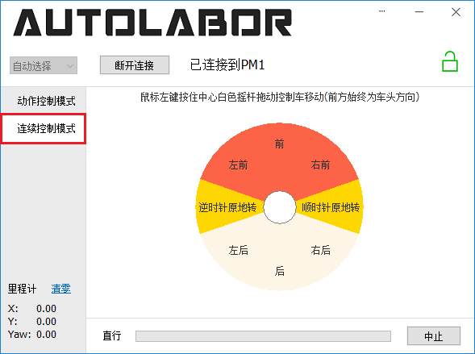

PM1 快速入门指南¶
检查收货清单¶
收件后打开包装，对照产品装箱单/发货清单进行清点，如有短缺请于三日内联系客服，过期不补。
危险！¶
为什么把
危险！放在文首？在 PM1 动起来之前，强烈建议你认真阅读以下内容，毕竟，我们也是为了你的安全
“PM1 发起狠来，的确很危险。”——某位不愿透漏姓名的工程师
操作需谨慎
也许你通关《极品飞车》数次，但我们仍然不建议你把 PM1 当成极品飞车来开（显然，PM1 也不能）
操作过程中你需要时刻留意 PM1 周边的行人和障碍物，以及，你自己
在 PM1 脱离操作者视线时，禁止遥控运动
接收器禁忌
禁止将 PM1 的手柄接收器安装在任何不属于 PM1 的地方，哪都不行
更多安全相关信息请参考安全须知。
容量校准¶
首次使用 PM1 前，需要对电池容量进行校准，以确保电池管理系统与电池真实容量相符。
将充电器连接至 PM1，等待充电指示灯变绿（一般建议 6 - 8 小时）。
长按库仑计右侧的
^（向上箭头）按键，听到“滴”声反馈后，松开按键即完成校准。
更多电池相关信息请参考保养电池。

PM1 Starter 软件控制¶
使用 PM1 Starter 控制
准备：在PM1电量充足的情况下打开PM1电源开关。
电脑连接 PM1
请勿使用 PL230X 系列 USB-串口 转换器，这个系列驱动有问题，在 Window 上可能导致蓝屏。
Windows 上初次使用时应联网，插入 USB-串口 转换器后稍等片刻，驱动会自动安装。
软件连接 PM1
打开 PM1 Starter，串口默认自动选择，点击
连接按钮开始连接 PM1，如下图所示。
成功连接 PM1 之后，连接提示信息会显示
已连接到PM1，右侧 PM1 状态图标会显示锁定或者解锁图标，如下图所示。如果状态图标显示的是锁定 ，需要点击该图标解锁，解锁完成后图标变为解锁图标
，需要点击该图标解锁，解锁完成后图标变为解锁图标 。
。执行动作
确保 PM1 前方有至少 1 米的可行驶区域，动作类型与参数保持默认，点击
执行按钮开始以 0.1 米/秒的速度向前直行 1 米，如下图所示。
动作执行过程中可以通过点击
暂停按钮暂停执行（快捷键空格），或者点击终止按钮终止执行（快捷键 Esc）。左下角显示里程计信息，点击清零可重置里程计。如下图所示。
摇杆控制
点击左侧
连续控制模式标签切换到摇杆控制模式。鼠标左键按住摇杆中心白色圆圈向不同区域拖动实现对应的控制。摇杆界面如下图所示。
更多详细信息请参考 PM1 Starter 用户手册。